Design Gallery
Placement views and upstream links for each design in the HighTide benchmark suite.
BlackParrot
BlackParrot is a Linux-capable, cache-coherent multicore RISC-V SoC from the University of Washington. Available in single-core (bp_uno) and quad-core (bp_quad) variants, with dense SRAM macros for L1 / L2 caches and register files.
Gemmini
Gemmini is a systolic array matrix multiplication accelerator from UC Berkeley, integrated with the Chipyard SoC framework. It is generated from a parameterizable Chisel description of a configurable systolic spatial array with on-chip scratchpad memory.
SHA3
SHA3 is a cryptographic hash accelerator from UC Berkeley implementing the Keccak / SHA-3 family of hash functions. A combinational-heavy datapath built around a 1600-bit state permutation, written in Chisel.
CNN
A convolutional neural network inference accelerator generated by NNgen, a model-to-hardware compiler built on Veriloggen. Embedded SRAM macros hold weights and activations.
Eyeriss v2
Sparse CNN inference accelerator with a 2×2 array of cluster groups, each holding 9 processing elements. CSC-encoded activations and weights stream through input-activation, weight, and partial-sum SRAM banks (per-PE spads + GLB) on a hierarchical mesh.
NyuziProcessor
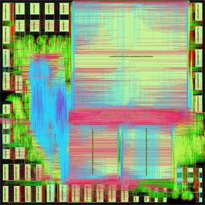
nangate45Nyuzi is an open-source GPGPU-style multicore vector processor designed for graphics and parallel-compute workloads. Hardware multithreading, wide vector arithmetic, and an L1 / L2 cache hierarchy across its cores.
Minimax
Minimax is a minimal-area RISC-V RV32IC core that decodes and serially executes 16-bit and 32-bit instructions. Designed for tiny embedded controllers where area dominates performance.
LiteDRAM
LiteDRAM is a configurable DRAM controller core generated by the LiteX / Migen Python framework. The HighTide variant uses the vendor-agnostic Generic SDR PHY (GENSDRPHY) with an AXI + Wishbone + native frontend crossbar; CPU / UART / ROM are stripped out so the benchmark exercises the bank machines, refresh FSM, and command arbitration rather than a SoC.
LiteEth
LiteEth is a small-footprint Ethernet IP core generated by the LiteX / Migen Python framework. This configuration ships a UDP endpoint over the Xilinx UltraScale+ GTH SGMII PHY — the most complex of the LiteEth PHY/protocol combinations.
LitePCI
LitePCI is the LiteX project's PCIe endpoint IP — a small-footprint, configurable
PCIe Gen2/3 controller generated from Python / Migen. This configuration targets the
Xilinx UltraScale+ pcie_us hard-IP PHY (committed as a LEF/LIB blackbox
with a 1000×1000 µm footprint) and five FakeRAM macros for the DMA buffer set.
CoralNPU

{kind=link}
{kind=link}
{kind=link}
{kind=link}
{kind=link}
{kind=link}
{kind=link}
{kind=link}
{kind=link}
{kind=link}
{kind=link}
{kind=link}
{kind=link}
{kind=link}
{kind=link}
{kind=link}
{kind=link}
{kind=link}
{kind=link}
{kind=link}
{kind=link}
{kind=link}
{kind=link}
{kind=link}
{kind=link}
{kind=link}
{kind=link}
{kind=link}
{kind=link}
Coral NPU is Google's open-source machine-learning accelerator core for energy-efficient AI at the edge. The HighTide port is generated from the upstream Chisel design and converted to Verilog via sv2v.
NVDLA
{kind=link}
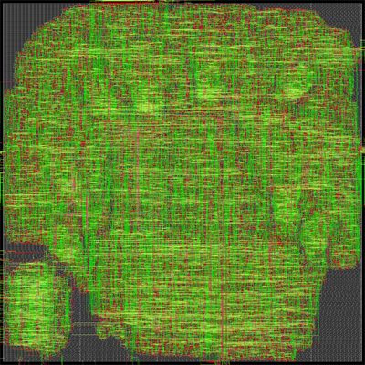
asap7partition_a{kind=link}
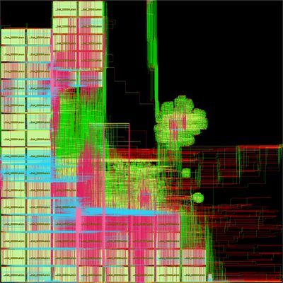
asap7partition_c{kind=link}
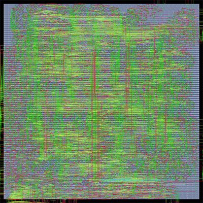
asap7partition_m{kind=link}
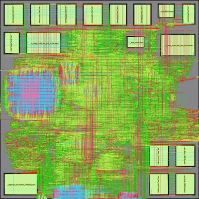
asap7partition_o{kind=link}
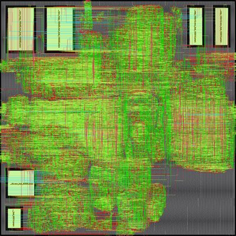
asap7partition_p{kind=link}
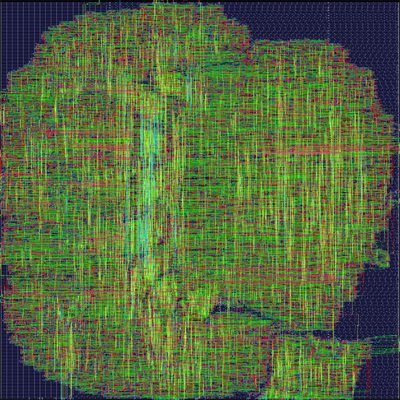
nangate45partition_a{kind=link}
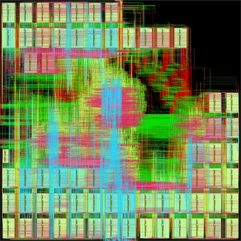
nangate45partition_c{kind=link}
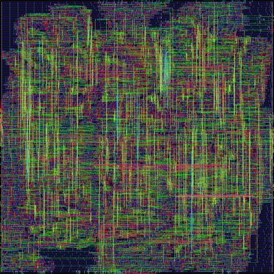
nangate45partition_m{kind=link}
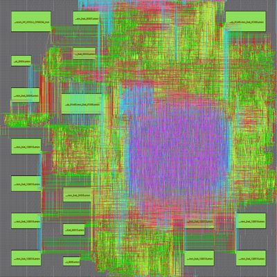
nangate45partition_o{kind=link}
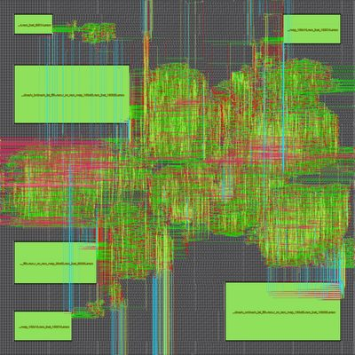
nangate45partition_p{kind=link}
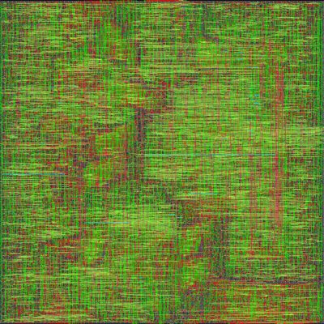
sky130hdpartition_a{kind=link}
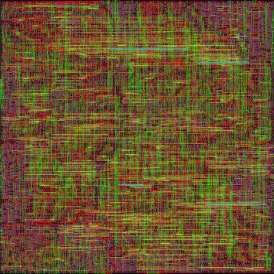
sky130hdpartition_m{kind=link}
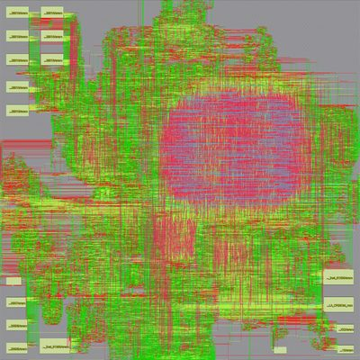
sky130hdpartition_o{kind=link}
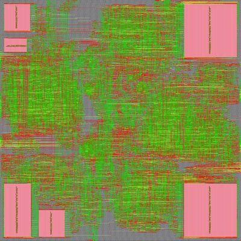
sky130hdpartition_pNVDLA is NVIDIA's open-source Deep Learning Accelerator for inference of convolutional neural networks. The nv_small configuration exposes the design's natural hierarchical partitioning into five top-level blocks — partitions a, c, m, o, p — each mixing compute datapath, control, and embedded SRAM macros.
FlooNoC
{kind=link}
{kind=link}
{kind=link}
FlooNoC is a fast and low-overhead Network-on-Chip from the PULP Platform group at ETH Zurich. SystemVerilog routers, links, and AXI bridges are composed into mesh / torus topologies via the FloGen Python generator.
Snitch Cluster
{kind=link}
{kind=link}
Snitch Cluster is an energy-efficient compute cluster from the PULP Platform group at ETH Zurich, built around the Snitch RISC-V core paired with custom floating-point extensions. SystemVerilog cores, FPU, TCDM, and AXI plumbing are composed into a parameterizable cluster wrapper via the clustergen Python generator.
Ternip
{kind=link}
{kind=link}
{kind=link}
Ternip is a SystemVerilog ternary matmul inference accelerator with a vector register file, a tmatmul unit backed by import/export vector SRAMs, and BSG STL dataflow plumbing.
Vortex
{kind=link}
{kind=link}
{kind=link}
Vortex is an open-source RISC-V GPGPU from Georgia Tech with a SIMT execution model, a full cache hierarchy, FPU, and multi-core memory subsystem. Targets graphics and general-purpose compute workloads on FPGA and ASIC.